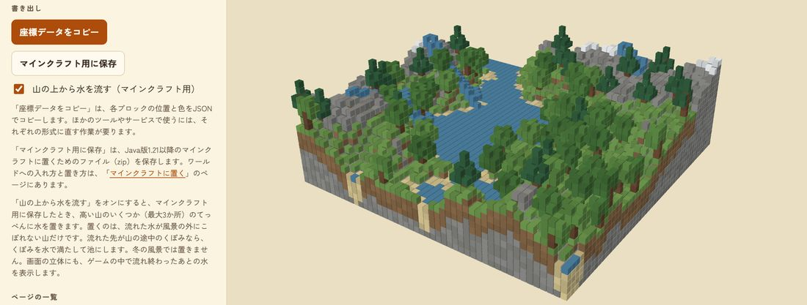
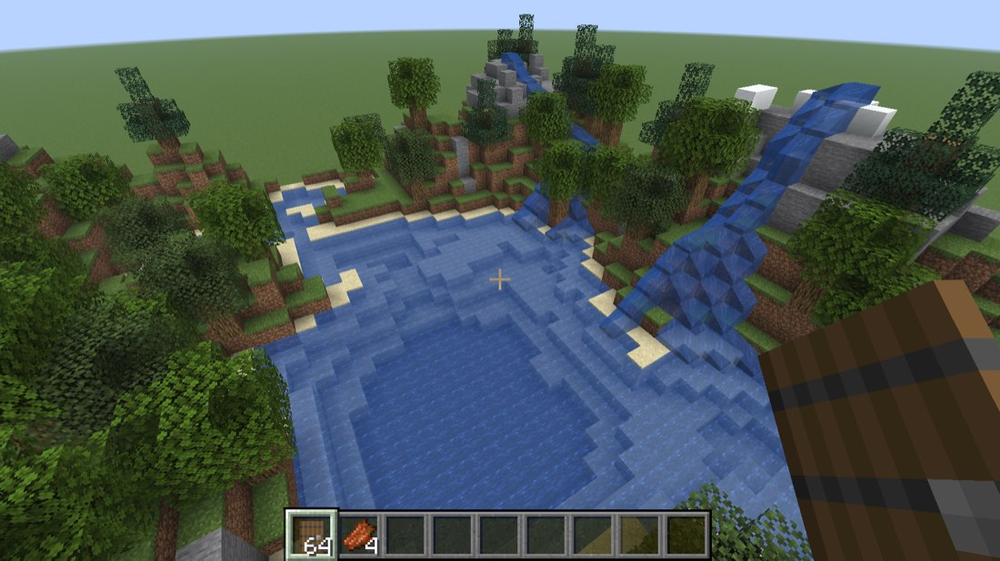
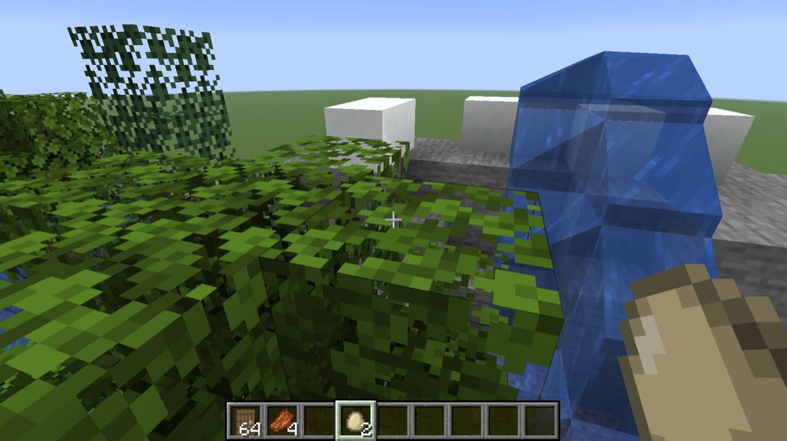
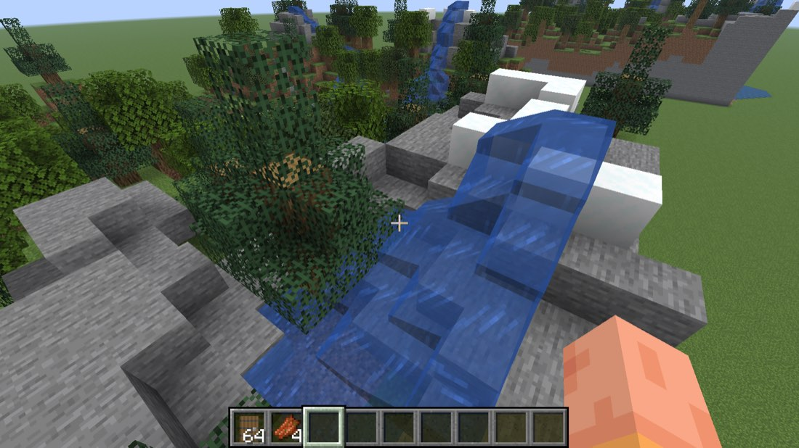

← マインクラフトで試してみた (8 / 8)
8. 山の上から水を流してみた
2026-11-20〜21に、風景を保存するときの設定「山の上から水を流す」を試しました。高い山のてっぺんに水を置き、ゲームの中で流れていく様子を見ました。
水を置く場所の決め方
ボクセル工房の本体で「山の上から水を流す」をオンにして保存すると、高い山のいくつか (最大3か所) のてっぺんに水が置かれます。

水を置く前に、マインクラフトと同じ決まりで、水がどこまで流れるかを計算しています。流れた水が風景の外にこぼれる山には、水を置きません。冬の風景には置きません (湖が氷になっているため)。
設定の使い方は、「マインクラフトに置く」の「山の上から水を流す」にあります。
水の流れ方の決まり
マインクラフトJava版26.3の水と同じ決まりで、1マスずつ流れる先を決めます。
- 下が空いていれば、まっすぐ下に落ちます。落ちた先では、勢いがもとに戻ります。
- 平らな所では、4マス以内でいちばん近い「落ちる所」(段差や崖) のほうへだけ広がります。近くに落ちる所がなければ、前後左右の4方向に広がります。
- 1マス進むごとに勢いが1つ弱くなり、7マス進むと止まります。
- 湖の水に入ったら、そこで止まります。
水を置く山の選び方
- 半径4マスの中でいちばん高い地面で、上が空いている所を、山のてっぺんの候補にします。
- 高い山から順に、上の決まりで水を流してみます。流れた水が風景の外に出る山と、3マス以上下らない山は、やめます。
- 選んだ山どうしは8マス以上はなし、最大3か所までにします。
計算が合っているかの確かめ方
画面のないサーバー用のマインクラフト26.3で、山の上に水を置いて流し、どのマスに水があるかを1マスずつ調べました。湖に入った2本の流れ (71マスと56マス) は、計算と1マスずつすべて同じでした。風景の外にこぼれた3本は、計算でも「こぼれる」になりました。
最初は、平らな所では4方向すべてに広がる、多めの計算にしていました。すると、本当は湖に入る流れまで「こぼれる」になってしまいました。ゲームと同じ「近い落ちる所のほうへだけ」の決まりにしたら、マスまで合いました。
滝になって湖へ

「山と湖・夏」の風景 (番号12) を、水を3か所にして置きました。2か所の水は、斜面を段になって流れ落ちる滝になり、湖まで届きました。
風景の外に、水はこぼれませんでした。
水を流す前の「山と湖・夏」の風景の見え方は、「1. 風景を置いてみた」にあります。建てる係で少しずつ置く /function voxel:build_slow でも、水が外に出ないことを、画面のないサーバー用のマインクラフトで確かめました (建てる係については「3. 少しずつ置いてみた」)。
湖に届かなかった1本

3か所のうち北の尾根の1か所は、斜面の途中のくぼみで止まり、湖まで届きませんでした。計算でも同じ所で止まっていました。
「もっと湖のようにたまるとよい」と考えて、流れた先がくぼみのときは、ふちの高さまで水を満たして、小さな池にするように直しました。
池にするときは、風景の端と湖を出口として、それぞれの場所で水がこぼれずにたまる高さ (ふちの高さ) を先に求めておきます。流れた水がくぼみに入ったら、つながったくぼみを、その高さまで水で満たします。木の幹や葉がある所は、そのままにします。
くぼみが池になった

直したあとに置き直すと、北の尾根の水は、雪の下から岩の斜面を下り、ふもとで止まりました。まわりの草地には、こぼれていません。

ふもとの石のくぼみには、平らな水面の池ができました。池の水は、ふちからあふれていません。
消したときの水

はじめは、「できあがりました」の [消す] で風景を消すと、流れた水が空中に柱のように残り、地面に落ちてから、数秒かけてゆっくり消えました。消すときに、置いたブロックだけを消していて、あとから流れた水は消す対象に入っていなかったためです。
そこで、一気に消す /function voxel:break と [消す] では、先に風景の範囲の水をすべて消すように直しました。直したあとは、流れた水もいっしょにすぐ消えることを、ゲームの画面でも確かめました。
消し方のくわしい説明は、「マインクラフトに置く」の「一気に消す」と、「手順」の [消す] にあります。少しずつ壊す /function voxel:break_slow は、この直しでは変えていません (壊す係については「4. 少しずつ壊してみた」)。
画面でも見られるように
このあと、ボクセル工房の画面の立体にも、流れ終わったあとの水 (滝や池) を表示するようにしました。水が流れていく途中の動きは出ません。
ボクセル工房の使い方は、「てびき」にあります。
気をつけること
- 水が流れた所の下の草は、時間がたつと土に変わります。マインクラフトのしくみです。
- 峰がすべて風景の端の近くにあると、水が1か所も置かれないことがあります。そのときは、保存したときのお知らせに出ます。